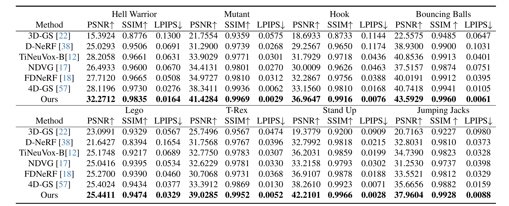

1School of Electronics and Information, Northwestern Polytechnical University 2Samsung R&D Institute
In this paper, we propose a 3D geometry-aware deformable Gaussian Splatting method for dynamic view synthesis. Existing neural radiance fields (NeRF) based solutions learn the deformation in an implicit manner, which cannot incorporate 3D scene geometry. Therefore, the learned deformation is not necessarily geometrically coherent, which results in unsatisfactory dynamic view synthesis and 3D dynamic reconstruction. Recently, 3D Gaussian Splatting provides a new representation of the 3D scene, building upon which the 3D geometry could be exploited in learning the complex 3D deformation. Specifically, the scenes are represented as a collection of 3D Gaussian, where each 3D Gaussian is optimized to move and rotate over time to model the deformation. To enforce the 3D scene geometry constraint during deformation, we explicitly extract 3D geometry features and integrate them in learning the 3D deformation. In this way, our solution achieves 3D geometry-aware deformation modeling, which enables improved dynamic view synthesis and 3D dynamic reconstruction. Extensive experimental results on both synthetic and real datasets prove the superiority of our solution, which achieves new state-of-the-art performance.
The pipeline of our proposed 3D geometry-aware deformable Gaussian splitting. In the Gaussian canonical field, we reconstruct a static scene in canonical space using 3D Gaussian distributions. We extract positional features using a MLP, as well as local geometric features using a 3D U-Net, fused by another MLP to form the geometry-aware features. In the deformation field, taking the geometry-aware features and timestamp t, a MLP estimates the 3D Gaussian deformation, which transfers the canonical 3D Gaussian distributions to timestamp $t$. Finally, a rasterizer renders the transformed 3D Gaussian to images.
Qualitative comparisons between baselines and our method on the synthetic dataset.
Quantitative comparison between our method and competing methods on the D-NeRF dataset. The best results are highlighted in bold.
Rendered images with varying timestamps.
@inproceedings{lu2024gagaussian,
title={3D Geometry-aware Deformable Gaussian Splatting for Dynamic View Synthesis},
author={Lu, Zhicheng and Guo, Xiang and Hui, Le and Chen, Tianrui and Yang, Ming and Tang, Xiao and Zhu, Feng and Dai, Yuchao},
booktitle={Proceedings of the IEEE/CVF Conference on Computer Vision and Pattern Recognition},
year={2024}
}